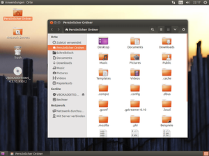

GNOME Flashback
Dieser Artikel wurde für die folgenden Ubuntu-Versionen getestet:
Ubuntu 14.04 Trusty Tahr
Zum Verständnis dieses Artikels sind folgende Seiten hilfreich:
 Falls man als Ubuntu-Benutzer weder mit Unity noch mit der GNOME Shell, Cinnamon oder MATE klarkommt und gerne einen Desktop wie zu Zeiten von GNOME 2 haben möchte, dann hat man mit dem GNOME Flashback Modus
Falls man als Ubuntu-Benutzer weder mit Unity noch mit der GNOME Shell, Cinnamon oder MATE klarkommt und gerne einen Desktop wie zu Zeiten von GNOME 2 haben möchte, dann hat man mit dem GNOME Flashback Modus  eine einfach zu konfigurierende und insbesondere auch ohne 3D-Effekte nutzbare Alternative als reiner 2D-Desktop.
eine einfach zu konfigurierende und insbesondere auch ohne 3D-Effekte nutzbare Alternative als reiner 2D-Desktop.
Dieser Artikel gibt einen kleinen Überblick über die Installation und die Nutzung des "GNOME3 Flashback" Modus. Aber Vorsicht beim Namen: Bis einschließlich Ubuntu 13.04 hieß dieser Modus "GNOME3-Fallback-Modus" oder auch "GNOME Classic". Mit dem Erscheinen von GNOME 3.8 wurde aber ein neuer Modus namens "GNOME Classic" eingeführt. Dabei handelt es sich um eine normale GNOME Shell, die mit Hilfe von Erweiterungen den Aufbau von GNOME 2 nachahmt und trotzdem nicht auf die Vorteile der GNOME Shell verzichtet. Mehr über diesen Modus steht im eigenen Artikel GNOME Classic.
Installation¶
Hat man sich dazu entschieden, den "GNOME Flashback" Modus auszuprobieren, dann muss man einfach nur das folgende Paket installieren [1]:
gnome-session-flashback (universe, ab Ubuntu 13.10)
 mit apturl
mit apturl
Paketliste zum Kopieren:
sudo apt-get install gnome-session-flashback
sudo aptitude install gnome-session-flashback
Vorbereitung¶
Falls man vorher Unity verwendet hat und den "GNOME Flashback" Modus nachinstalliert, sollte man noch einige Dinge ändern, bevor man sich das erste Mal anmeldet. Die "traditionellen" Rollbalken am Fensterrand kann man wiederherstellen, indem man ein Terminal öffnet[2] und mit Root-Rechten[3] das Paket overlay-scrollbar entfernt und diese auch gleich im Konfigurationssystem deaktiviert [4]:
sudo apt-get purge overlay-scrollbar gsettings set org.gnome.desktop.interface ubuntu-overlay-scrollbars false
Hinweis:
Unity selbst sollte man nicht voreilig entfernen, da es sonst zu Problemen mit dem Anmeldemanager LightDM kommen könnte, sofern dieser noch den voreingestellten unity-greeter benutzt!
Erstanmeldung¶
|  |
| GNOME Flashback unter Ubuntu 14.04 |
Nach einem Neustart (wegen der Rollbalken, ansonsten hätte auch ein bloßes Ab- und wieder Neuanmelden ausgereicht) wählt man als Sitzung "GNOME Flashback (Compiz)" aus. Diese Sitzung verwendet Compiz als Fenstermanager. Falls das eigene System kein Compiz unterstützt, dann kann man stattdessen "GNOME Flashback (Metacity)" verwenden. Diese Sitzung verwendet dann den althergebrachten Fenstermanager Metacity.
Anpassen¶
Um das System den eigenen Wünschen anzupassen, bieten sich die Systemeinstellungen und das GNOME Tweak Tool an. Die Nutzung und die möglichen Anpassungen des Panels werden im Artikel GNOME Panel erklärt. Dabei ist zu beachten, dass man zum Hinzufügen oder Entfernen von Applets, Starter etc., die Tastenkombination
Super +
Alt +  nutzen muss.
nutzen muss.
Problembehebung¶
Panels zurücksetzen¶
Sind die Panels verschwunden oder „verkonfiguriert“, kann man sie auf zwei Methoden zurücksetzen. Die Befehle führt man nacheinander im GNOME-Befehlseingabefenster nach Drücken von Alt + F2 oder im Terminal aus.
Die einfachste Methode ist, den Prozess
gnome-panelzu beenden, der automatisch neu startet:killall gnome-panel
Wenn das nicht hilft, löscht man sämtliche Panel-Einstellungen:
Löscht alle selbst erstellten Starter aus dem Panel:
rm -rf $HOME/.config/gnome-panel
Löscht alle Panel-Einstellungen:
gsettings reset-recursively org.gnome.gnome-panel
Prozess beenden:
killall gnome-panel
Links¶
GNOME
 Übersichtsseite
ÜbersichtsseiteGNOME Shell - Aktuelle Standardoberfläche des GNOME Projekts
GnomeFlashback
- Projektseite auf wiki.gnome.org
- Erstellt mit Inyoka
-
 2004 – 2017 ubuntuusers.de • Einige Rechte vorbehalten
2004 – 2017 ubuntuusers.de • Einige Rechte vorbehalten
Lizenz • Kontakt • Datenschutz • Impressum • Serverstatus -
Serverhousing gespendet von